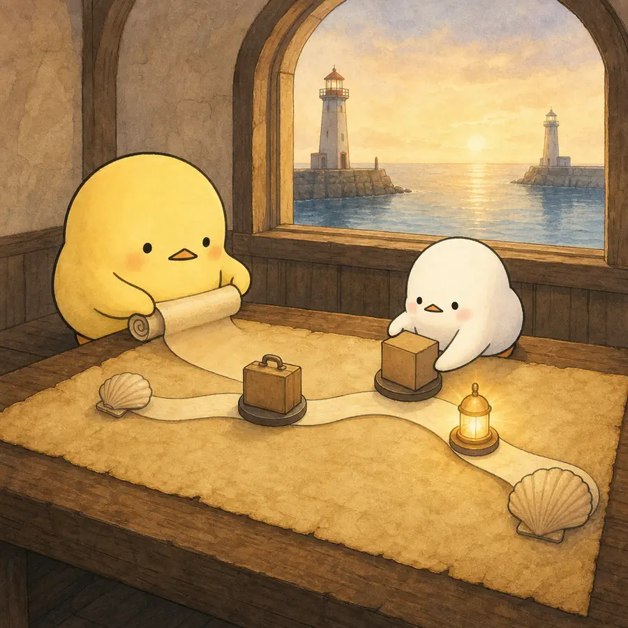
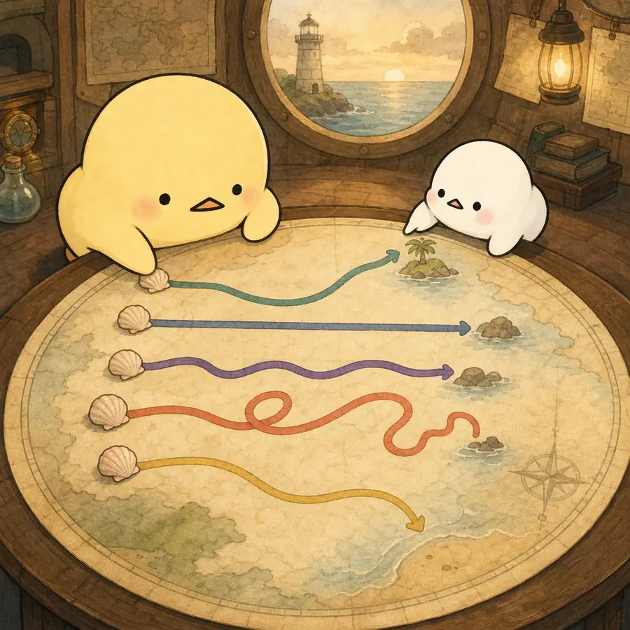

ILLUSTRATED OVERVIEW
멀리 사는 조부모와 손주의 친밀감은 어떻게 바뀔까?
멀리 사는 조부모가 손주와의 친밀감을 돌아보며 그린 항로에는 한 방향만 있지 않았습니다. 관계를 바꾼 사건과 이 회고자료의 경계를 함께 봅니다.
옆으로 넘겨 4컷 보기
-

뾰롱이이 긴 항로는 누가 그린 걸까?
쪼롱이멀리 사는 조부모가 지난날을 그렸대.
1컷 · 기억으로 그린 친밀감 항로
연구는 장거리 조부모가 회고한 친밀감 변화와 관계 전환점을 RIT로 시각화했다.
논문 근거와 한계
반구조화 면접 참여자 35명 중 녹취 가능한 30명의 자료를 분석했습니다. 조부모는 한 명의 장거리 손주를 골라 손주가 다섯 살 무렵부터 현재까지 자신이 느낀 심리적 유대의 변화와 사건을 직접 곡선으로 그렸습니다.
주의곡선은 객관적 거리 측정이나 손주의 평가가 아니라 조부모 한쪽이 현재 시점에서 재구성한 주관적 회고입니다.
근거 구간
METHOD-001PROCEDURE-001 -

뾰롱이어? 길이 모두 다르게 휘어 있네.
쪼롱이멀다고 한쪽으로만 가지 않았어.
2컷 · 다섯 가지 관계 항로
친밀감 궤적은 뚜렷한 감소·일관된 유지·작은 변화·다차원 변화·뚜렷한 증가의 다섯 유형이었다.
논문 근거와 한계
분석된 30개 관계 중 뚜렷한 감소 10개, 일관된 친밀감 8개, 작은 변화 5개, 다차원 변화 5개, 뚜렷한 증가 2개가 분류되었습니다. 장거리라는 조건만으로 한 방향의 관계변화를 가정할 수 없습니다.
주의이 유형은 작은 목적표본의 회고 곡선을 질적으로 묶은 것이며 모든 장거리 조손관계의 고정 비율이나 발달단계가 아닙니다.
근거 구간
TRAJECTORY-001 -
뾰롱이다리는 놓이고, 한쪽엔 폭풍이네.
쪼롱이만난 일도, 다툰 일도 기억에 남았대.
3컷 · 가까워지는 등불과 멀어지는 폭풍
함께한 시간·기술·관계투자는 주로 긍정적, 거리·투자 부족·시간 부족은 주로 부정적 전환점이었다.
논문 근거와 한계
총 100개의 고유 전환점 사건이 여덟 범주로 분류되어 긍정 50개와 부정 50개가 보고됐습니다. 함께한 시간 22건, 기술사용 11건, 관계투자 11건은 긍정적이었고 지리적 거리와 관계투자 부족은 각각 12건씩 부정적이었습니다. 가족 역동은 긍정과 부정 양쪽에 나타났습니다.
주의전환점 범주의 빈도는 참가자 수가 아니라 사건 수입니다. 기술이나 방문이 모든 관계에서 같은 결과를 낳는다는 인과효과도 아닙니다.
근거 구간
TRAJECTORY-001TURNING-001TURNING-002TURNING-003 -
뾰롱이그런데 등대 불빛이 한쪽뿐이네?
쪼롱이응, 손주가 그린 지도는 없었어.
4컷 · 한쪽 등대가 비춘 회고
조부모 한쪽의 회고와 제한된 표본이므로 손주의 관점·인과·문화적 일반화는 열려 있다.
논문 근거와 한계
친밀감은 주관적이며 참가자마다 다르게 이해할 수 있습니다. 표본은 문화적으로 다양하지 않았고, 손주가 다섯 살 이전의 사건과 아직 끝나지 않은 청소년기 이후는 포착하지 못했습니다. 손주 보고도 수집하지 않았습니다.
주의보고된 사건이 친밀감을 변화시켰다는 인과관계나 두 세대가 같은 관계사를 공유한다는 결론을 내릴 수 없습니다.
근거 구간
METHOD-001PROCEDURE-001LIMITATIONS-001